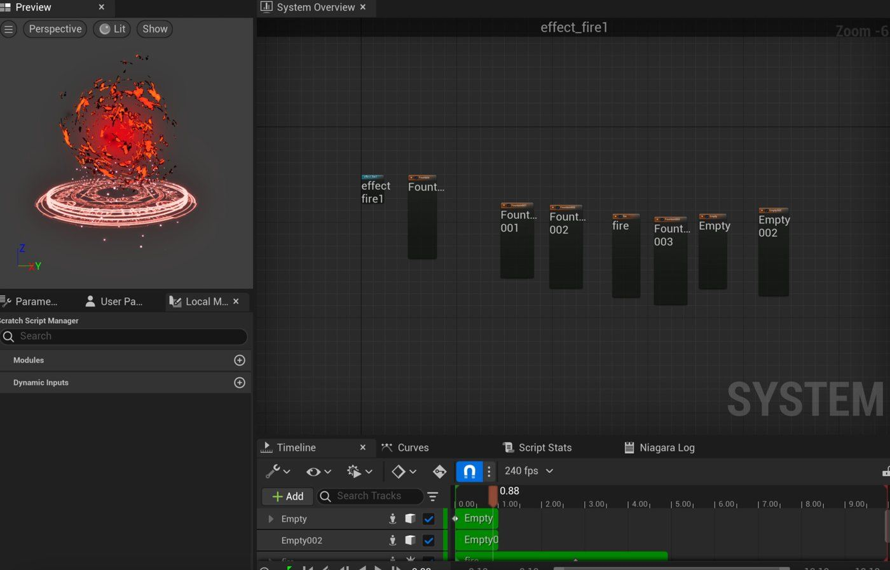

Fire Magic
A fire spell effect made with Unreal Engine Niagara.
The effect
A fire spell cast from a glowing magic circle. Flames and embers swirl up around the character, gather into a ball of fire, then burst and fade.
My role
I made the whole effect on my own in Unreal Engine's Niagara system.
- Built one Niagara system from several emitters: fire, fountains of embers and sparks
- Designed the magic circle on the ground
- Timed each part on the timeline so the spell builds up and then bursts
- Type
- Real-time VFX
- Engine
- Unreal Engine, Niagara
- My role
- Solo project
Inside Niagara

The Niagara system
In the editor
More work: 3D & Animation, Film & Content